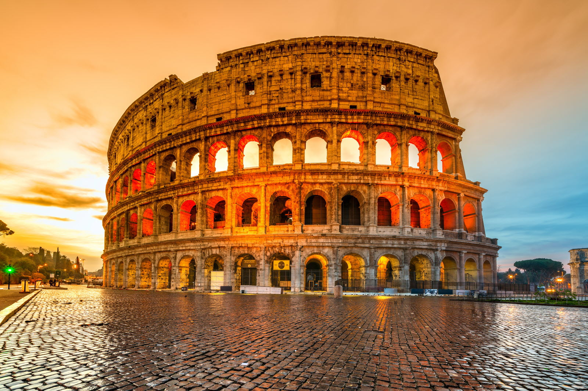

Choisissez votre aventure

Le Colisée
Le Colisée, amphithéâtre de la mort et des jeux, divertissements croisés des Romains de l'Antiquité. Aujourd'hui le Colisée est le symbole de la Rome Antique, un lieu à voir absolument, qui procure une émotion toute particulière.
Les lieux incontournables
Un guide pour préparer votre road-trip. Nous vous avons sélectionné les villes et monuments à ne pas manquer lors de votre visite dans le plus beau pays du monde.

Manarola
Manarola est un de plus beaux villages de Cinque Terre, construite à côté d'une falaise qui offre un panorama à couper le souffle. Elle est également réputée pour la fabrication son vin, le Sciacchetrà, qui est célébré dans des textes depuis l'Antiquité.